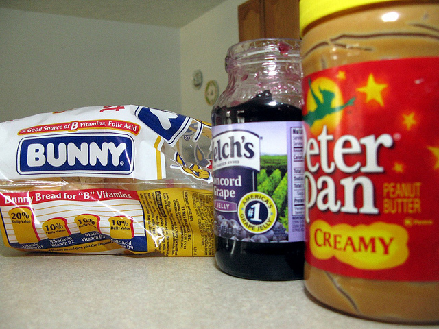
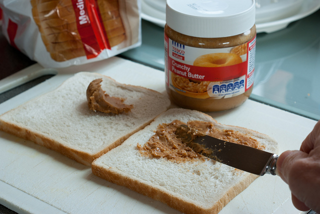
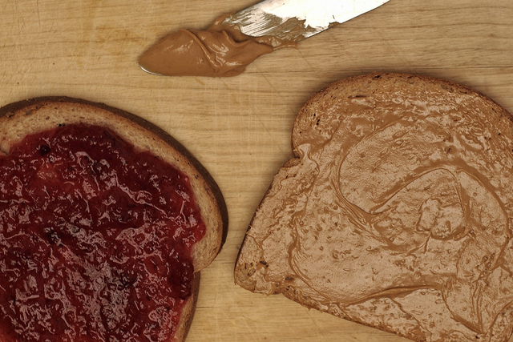
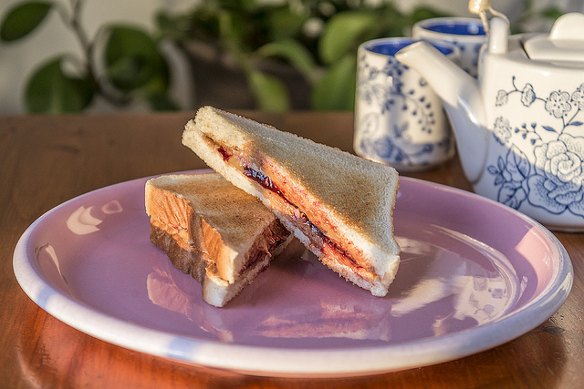
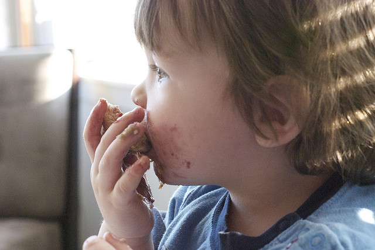

HOW TO MAKE A PB&J YO!
←
→
Step 1
Step 2
Step 3
Step 4
Step 5

Step 1: Gather the reagents!

Step 2: Spread the Peanut Butter!

Step 3: Spread the Jelly!

Step 4: Synthesize the Pieces!

Step 5: Eat and Enjoy!